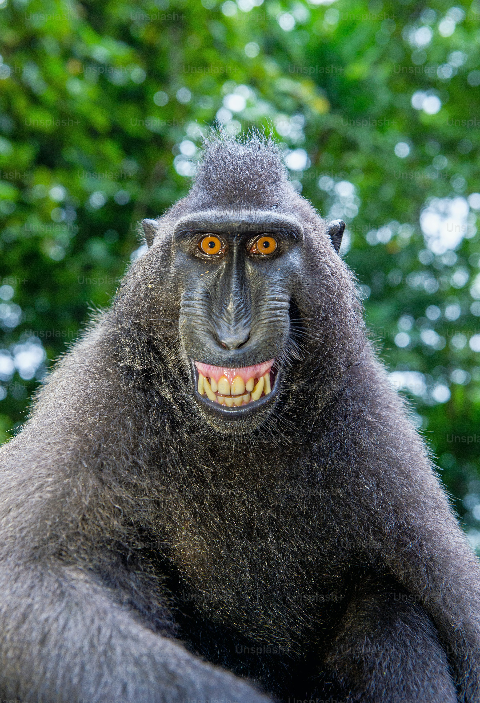

Bernardo
Babuíno (do francês babouin) é a designação genérica para antropoides cercopitecídeos do gênero Papio e afins, caracterizados pelo focinho pontudo, caninos grandes, bochechas volumosas e calosidades nas nádegas. É um animal semi-quadrúpede da ordem dos primatas que mede até 120 centímetros de comprimento. Vive na África e seu habitat natural é nos campos abertos (savana, pastagens ou terrenos rochosos).

Ao contrário dos macacos, os babuínos passam a maior parte do tempo no chão. Suas caudas não são preênseis. Os babuínos são grandes lutadores e demonstram pouco medo de outros animais, inclusive seres humanos. Todos têm hierarquias fortes e complexas dentro dos grupos familiares.
caso queira ver o walterclique aqui
Caso queira voltar ao Ianclique aqui